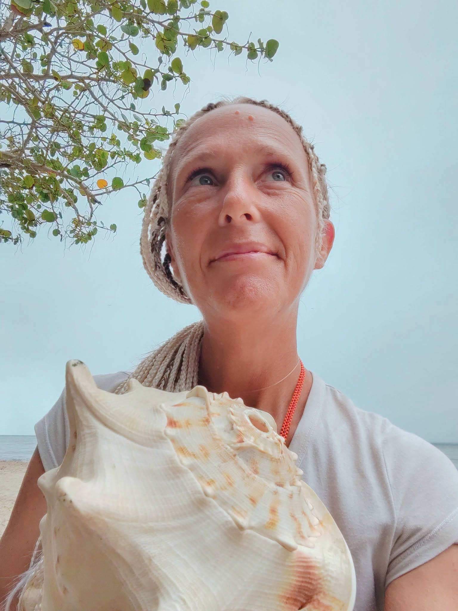
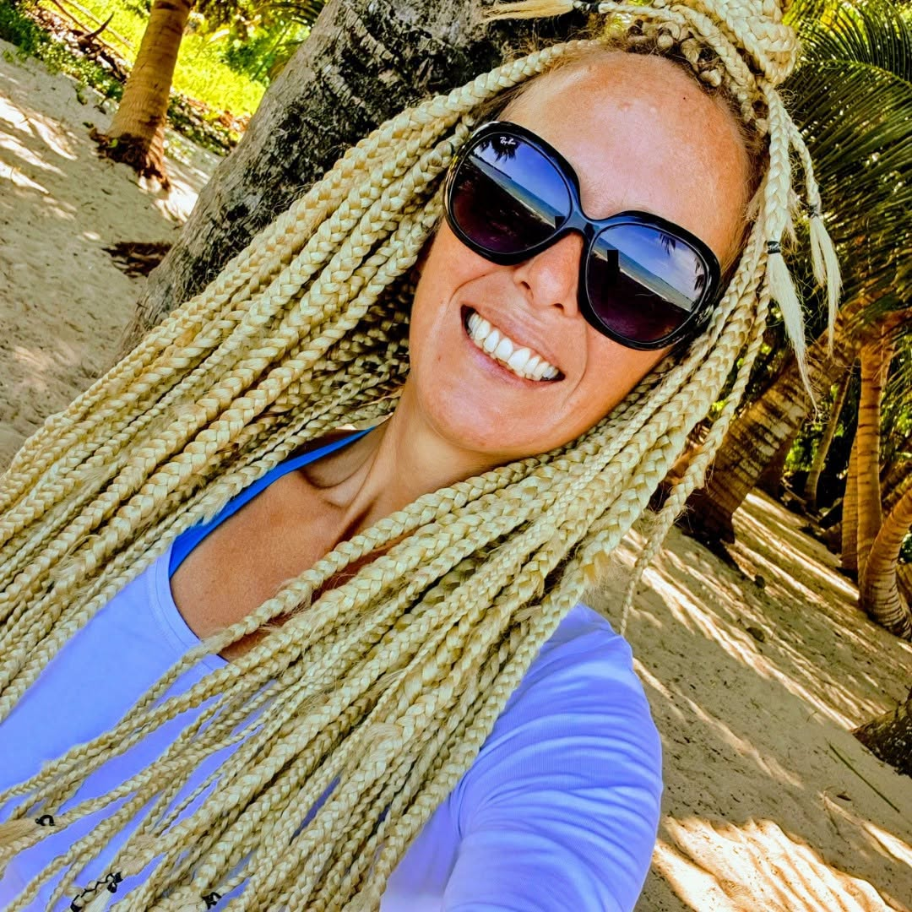
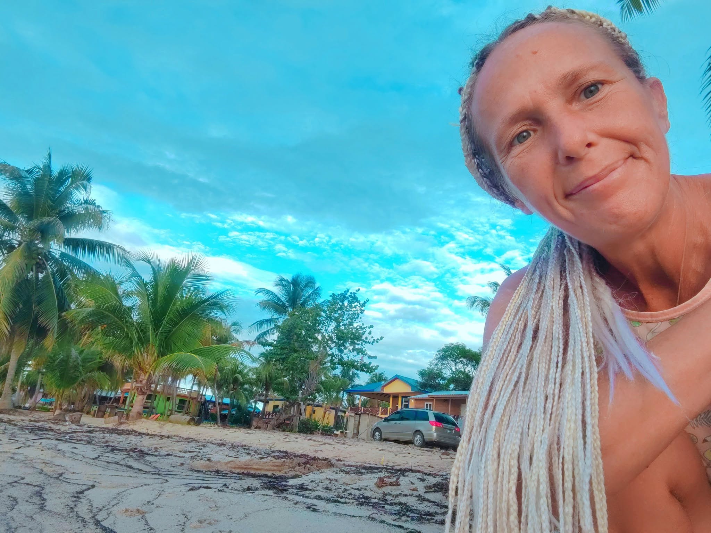
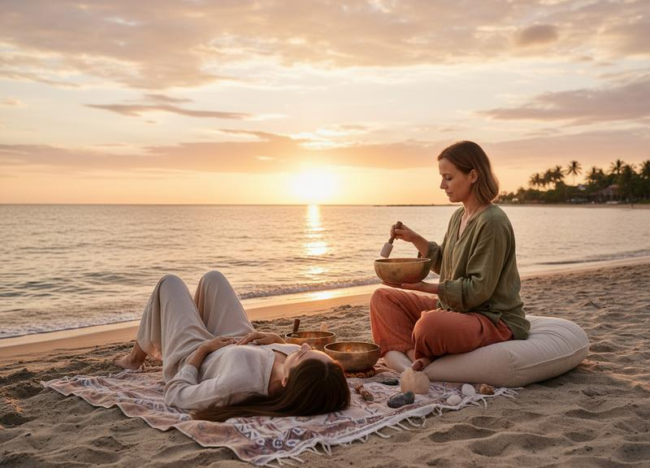

RITUAL & INNER EXPLORATION
Cacao Ceremony
A personal online cacao ritual for presence and intention. Prepare your own cacao or join with a warm drink of your choice.
Enquire about this experience ↗
RITUAL & INNER EXPLORATION
Sunrise Ritual
A guided personal ritual to set an intention and consciously welcome a new day.
Enquire about this experience ↗
RITUAL & INNER EXPLORATION
Sunset Ritual
A guided personal reflection with storytelling and Living Time.
Enquire about this experience ↗
RITUAL & INNER EXPLORATION
Full Moon & New Moon Ceremony
A personal online moon ritual for reflection, intention and a conscious relationship with cycles.
Enquire about this experience ↗
RITUAL & INNER EXPLORATION
The Shaman’s Path | Power Animal
A guided personal journey exploring your relationship with a power animal.
Enquire about this experience ↗
RITUAL & INNER EXPLORATION
Shamanic Journey | Three Worlds
A guided online journey through the Lower, Middle and Upper Worlds in a suitable personal setting.
Enquire about this experience ↗
RITUAL & INNER EXPLORATION
Eternal Youth Rites
A personal guided exploration of the rites and their meaning, adapted for an online meeting.
Enquire about this experience ↗
RITUAL & INNER EXPLORATION
Light Language & Grid Work
Explore Light Language and 7-, 49- or 144-grid practices through a guided personal session.
Enquire about this experience ↗
RITUAL & INNER EXPLORATION
BLINKITA Cosmovision
A personal guided experience bringing together BLINKITA’s perspectives and practices.
Enquire about this experience ↗